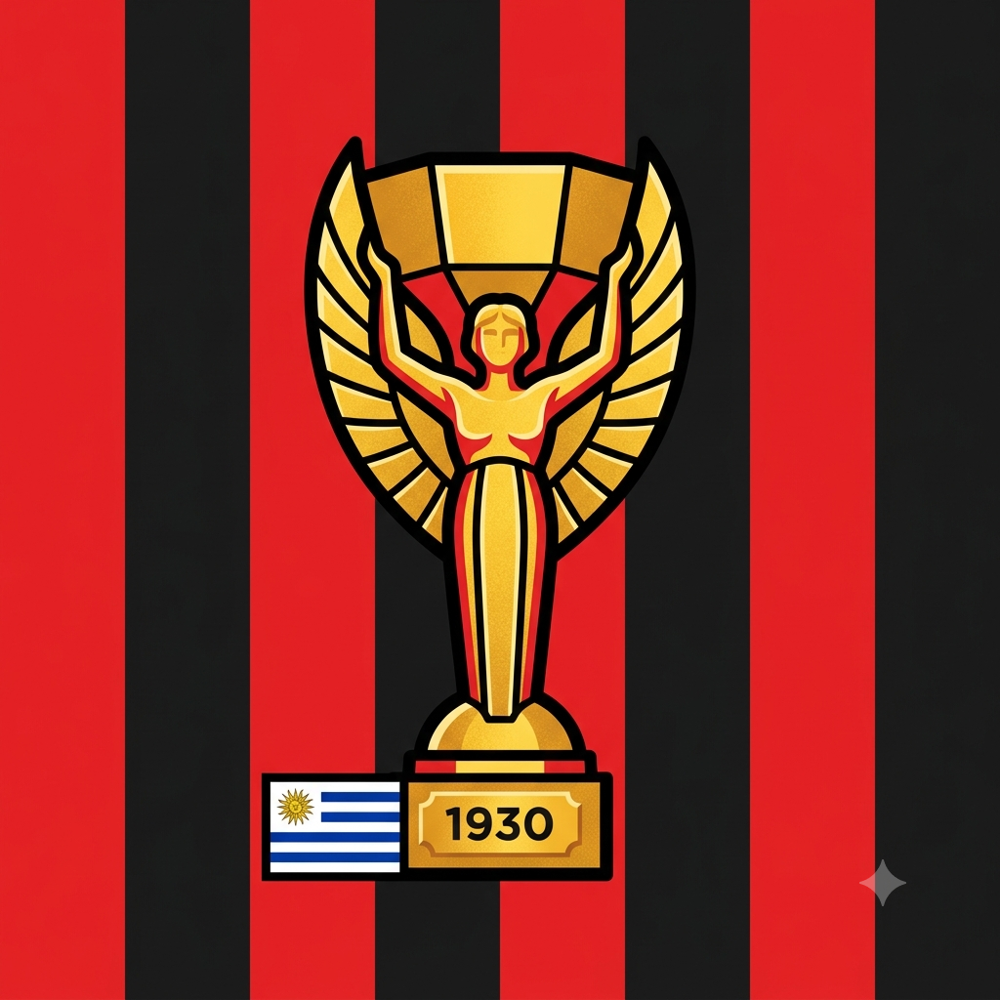

Bem-vindo ao meu blog!
Por: Leonardo Agner Quinor
Fala, galera! Este é o meu novo espaço para falar sobre o esporte mais amado do planeta. Aqui vamos discutir desde a história até os lances mais marcantes do futebol.
Curiosidades, histórias e muita paixão pelo futebol!
Por: Leonardo Agner Quinor
Fala, galera! Este é o meu novo espaço para falar sobre o esporte mais amado do planeta. Aqui vamos discutir desde a história até os lances mais marcantes do futebol.

Por: Leonardo Agner Quinor
Embora existam registros de jogos com bola na antiguidade na China e na Grécia, o futebol moderno com as regras que conhecemos hoje foi estruturado na Inglaterra no século XIX.
Fonte: História do Esporte

Por: Leonardo Agner Quinor
Edson Arantes do Nascimento, o Pelé, mudou a história do esporte. Ele é o único jogador da história a conquistar três Copas do Mundo (1958, 1962 e 1970). Um verdadeiro gênio da bola!
Fonte: FIFA
Por: Leonardo Agner Quinor
Com mais de 3,5 bilhões de fãs espalhados por todos os continentes, o futebol é indiscutivelmente o esporte mais popular e acompanhado do mundo.
Fonte: World Atlas

Por: Leonardo Agner Quinor
A primeira edição do mundial aconteceu em 1930, no Uruguai. Os donos da casa se consagraram os primeiros campeões ao vencer a Argentina na grande final por 4 a 2.
Fonte: Museu do Futebol
Por: Leonardo Agner Quinor
O futebol feminino vem quebrando recordes de público e audiência a cada ano que passa, mostrando muita evolução técnica, tática e provando que o talento nos gramados não tem gênero.
Fonte: Globo Esporte